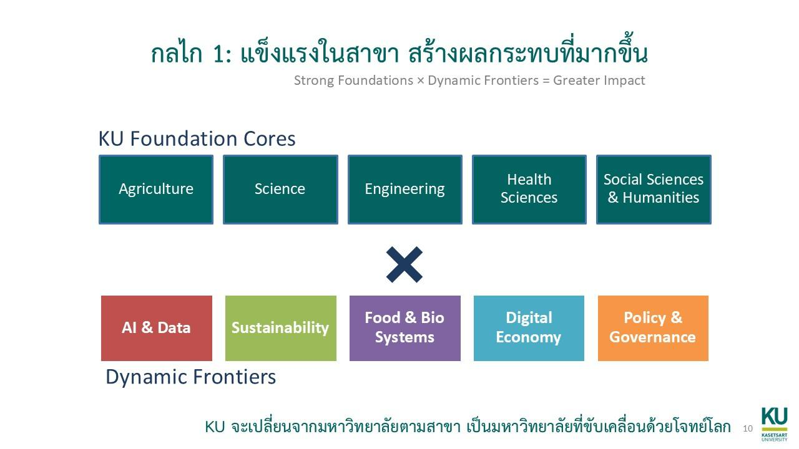

รายวิชาและเอกสารประกอบ
พื้นที่สำหรับจัดรายวิชาที่สอนจริง พร้อม outline, lecture note, assignment, rubric และตัวอย่างงานของรายวิชา
หน้านี้จะรวมรายวิชาที่สอนจริง เนื้อหาประกอบการเรียน ตัวอย่าง assignment โจทย์ lab และสื่อที่ใช้กับนิสิต โดยแยกออกจากบทความทั่วไปอย่างชัดเจน
พื้นที่สำหรับจัดรายวิชาที่สอนจริง พร้อม outline, lecture note, assignment, rubric และตัวอย่างงานของรายวิชา

บันทึกวิธีใช้ AI ในการเรียนการสอนจริง เช่น การทำ prototype การวิเคราะห์โจทย์ และการประเมินงานบนฐานความรู้ของวิชา